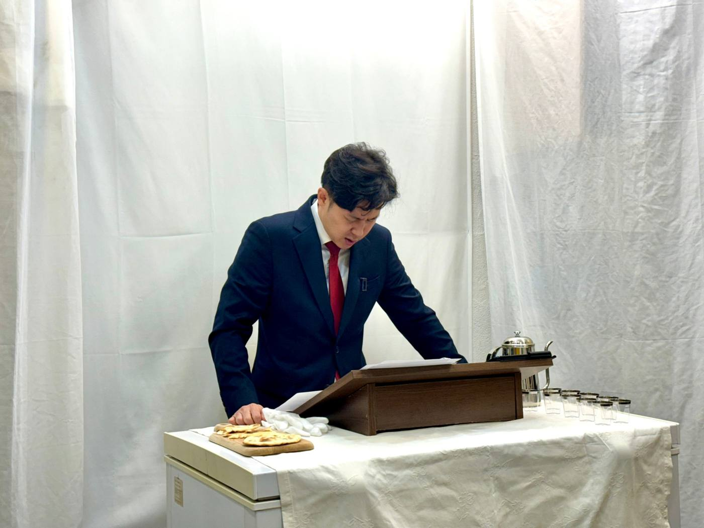

환영합니다
날마다교회는 예배와 선교, 구제와 장학 사역에 힘쓰며, 하나님을 사랑하고 이웃을 섬기는 교회입니다. 2021년 7월 4일 설립되었으며, 대한예수교장로회 총회(합동)에 소속된 비영리 종교단체입니다. 교회의 모든 재정은 영리를 목적으로 하지 않고 예배와 신앙 교육, 선교와 구제, 장학 등 이웃을 돕는 일에 사용됩니다.

예배 안내
| 주일예배 | 매주일 오전 10시 · 서울시 종로구 종로 120, 동영타워 5층 (누구나 참석하실 수 있습니다) |
|---|---|
| 아침묵상 | 매주 화요일 오전 7시 30분 · 온라인 (공동체 성경읽기) |
| 소그룹 모임 | 매주 금요일 밤 9시 30분 · 온라인 |
우리가 하는 일
예배
말씀과 찬양, 성례로 하나님께 예배드립니다.
선교
여러 나라의 협력 선교사님들을 후원하며 복음 사역을 돕습니다.
구제
국내외 이웃에게 수술비 지원, 난민 구호, 탈북민 지원 등으로 하나님의 사랑을 전합니다.
장학
매 학기 국내외 학생들에게 장학금을 지급합니다.
About Nalmada Church (English)
Nalmada Church (날마다교회; legal name 대한예수교장로회날마다교회, also known as Daily Church) is a registered nonprofit religious organization in the Republic of Korea, founded on July 4, 2021. "Nalmada" (날마다) is the romanization of our church name and means "daily" in Korean. That is why our official domain is nalmada.or.kr.
We are devoted to worship, missions, relief, and scholarship ministries, loving God and serving our neighbors. Read more in English →